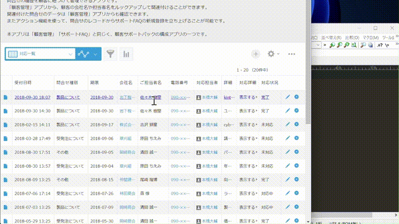
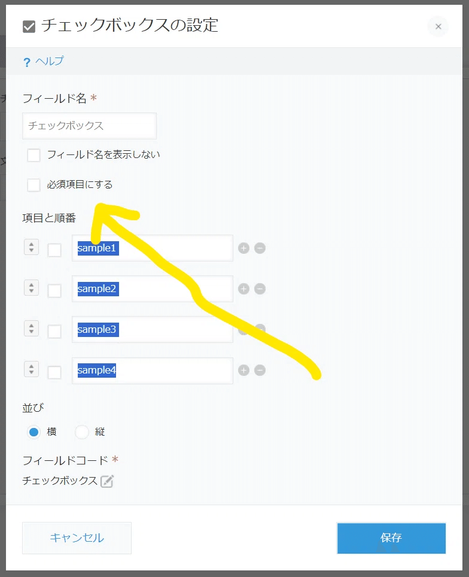
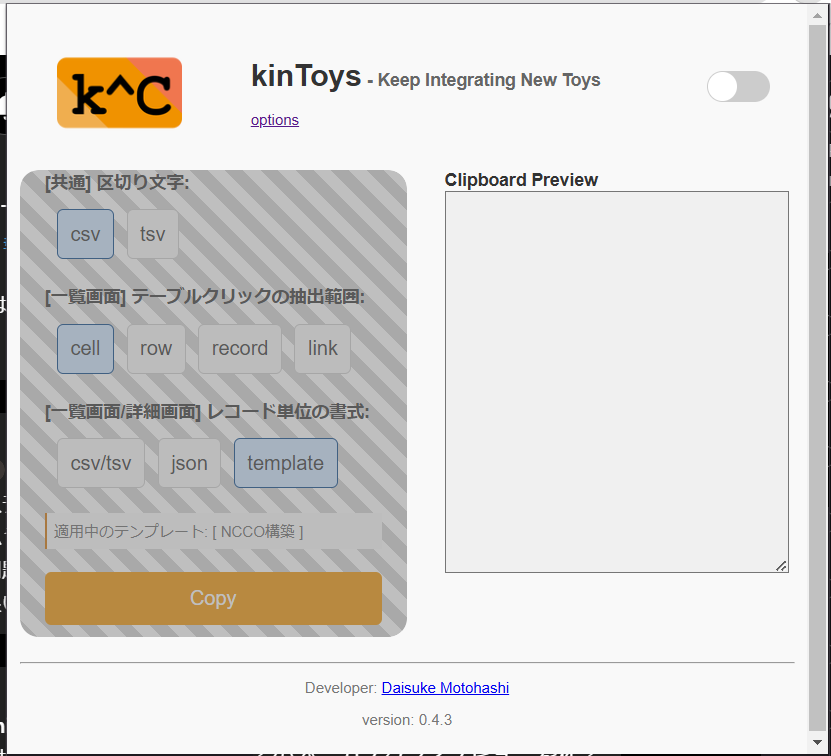
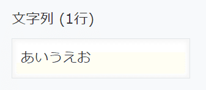
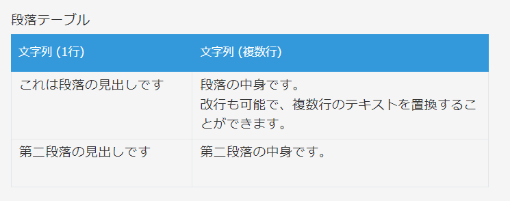

kinToys
kinToys使い方
kinToys には「ポップアップからのコピー」と「画面クリックによるコピー」の二通りのコピー方法があります。
インストール
Google Chrome(または Chromium 系ブラウザ)で以下の手順を行ってください。
-
Chrome ウェブストアを開く
kinToys のストアページを開きます。
-
「Chrome に追加」をクリック
確認ダイアログが表示されたら「拡張機能を追加」を選びます。
-
ツールバーにピン留め
アドレスバー右のパズルアイコンから kinToys のピンをオンにします。
ポップアップからコピー
ブラウザのツールバーにある kinToys アイコンをクリックすると、ポップアップウィンドウが開きます。表示中の画面に応じて、次のコピーができます。

一覧画面で
- テーブルをコピー
- フィールドをコピー
- レコードをコピー
- テンプレートに流し込んでコピー
詳細画面で
- CSV / TSV をコピー
- JSON をコピー
- テンプレートに流し込んでコピー
編集画面で
- クリップボードの CSV をサブテーブルに貼り付け(オプションで有効化)
画面クリックでコピー
一覧画面・詳細画面をクリックしてコピーできます。

- フィールドをコピー
- レコードの表示をコピー
- レコードの全体をコピー
- URL リンクをコピー
コンテキストメニューからコピー
右クリックメニューから次の機能を使えます。
- シンプルな URL をコピー
- 一覧画面の改行表示をトグル
アプリ設定画面・プラグイン設定画面
- アプリ設定(フォーム編集)画面で、フィールド設定ダイアログの内容を JSON でコピー&ペースト
- 一覧の絞り込みダイアログで、絞り込み条件・ソート条件を JSON でコピー&ペースト
- プラグイン設定画面で、設定ファイルをダウンロード / アップロード

無効モード
kinToys の機能を一時的に停止できます。ポップアップの右上に表示されているラジオボタンから切り替えてください。無効化中はラジオボタンに網掛けが入ります。

テンプレート記法
kinToys では、kintone のフィールド値を埋め込むテンプレートを使えます。テンプレートはオプション画面で作成し、ポップアップのラジオボタンを template にしているときのコピーに適用されます。
% 記法(フィールド単体の置換)
フィールドコードを % で囲んで指定すると、そのフィールドの値に置き換わります。
このフィールドには『%SINGLE_LINE_TEXT%』と記入されています。フィールドコード SINGLE_LINE_TEXT の値が「あいうえお」なら、

次のように出力されます。
このフィールドには『あいうえお』と記入されています。ループ記法(テーブルの展開)
kintone アプリのテーブル(サブテーブル)を展開できます。ループは %フィールドコード{ で始まり、}% で終わります。

たとえば次のテンプレートで JSON を出力できます。
[
%table{
{
"action": "%action%",
"text": "%text%"
} %joint%
}%
]kinToys のテンプレートには今のところ条件分岐がありません。JSON の要素区切りのカンマのように「最後の要素だけ不要」なものは、kintone アプリ側にカンマの要否を持つフィールドを用意してください。上の例では %joint% というフィールドにカンマを持たせています。kintone の計算式を組み合わせれば、より柔軟な出力が可能です。
オプション画面
ツールバーの kinToys アイコンを右クリックして「オプション」を選ぶか、ポップアップにある options リンクからオプション画面を開きます。
テンプレート設定
テンプレートコピーで使うテンプレートを作成します。書き方はテンプレート記法を参照してください。
オプション設定
- Enable image copy button — ポップアップからグラブコピーした際に、テキストを画像としてクリップボードにコピーします。
- Break multi-line and single-line text — 一覧画面・詳細画面で、一行文字列と複数行文字列を改行表示します。
- フィールド設定を整形済み JSON でコピーする設定、サブテーブルインポーターの有効化、表示言語の切り替えなどもここで行います。
よくある質問
料金はかかりますか?
無料でご利用いただけます。
アイコンが表示されません。
パズルアイコンから kinToys をピン留めしてください。表示されない場合は chrome://extensions で有効になっているか確認してください。
一時的に kinToys を止めたいときは?
ポップアップ右上のラジオボタンで無効モードに切り替えられます。
更新内容はどこで確認できますか?
CHANGELOG(GitHub)で確認できます。
不具合や要望はどこに伝えればよいですか?
GitHub または Chrome ウェブストアのサポート欄からお知らせください。